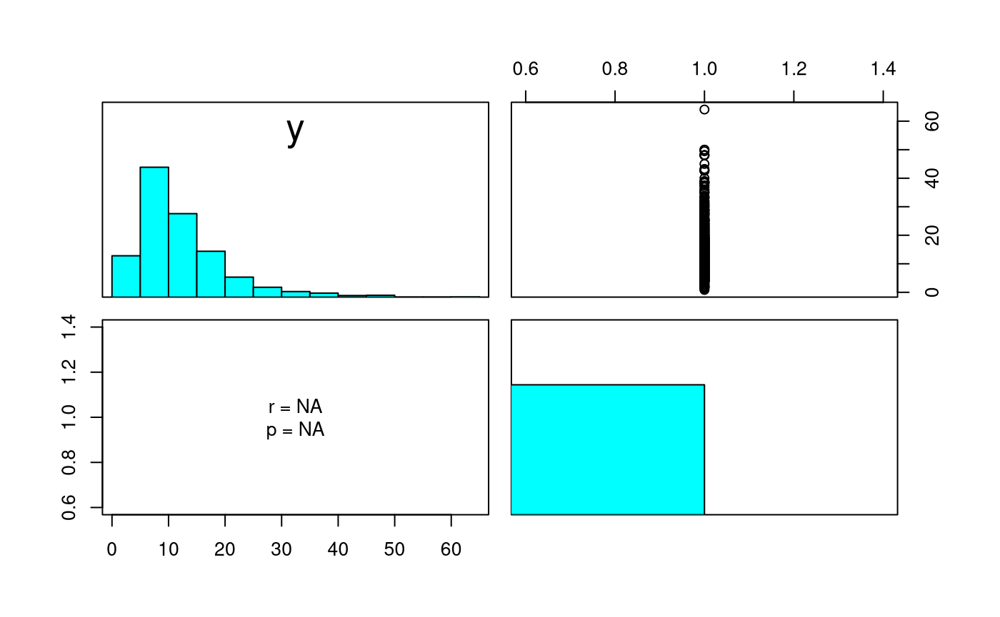

vignettes/tests/test-linreg-estimation-descriptives-simple.Rmd
test-linreg-estimation-descriptives-simple.Rmd
# The Linear Regression Model: Descriptives - Simple Regression {#linreg-estimation-descriptives-simple-example}See jeksterslabRdatarepo::wages.matrix() for the data set used in this example.
X <- jeksterslabRdatarepo::wages.matrix[["X"]]
# age is removed
X <- X[, "education"]
X <- unname(
cbind(
1,
X
)
)
y <- unname(
jeksterslabRdatarepo::wages.matrix[["y"]]
)
head(X)
#> [,1] [,2]
#> [1,] 1 12
#> [2,] 1 9
#> [3,] 1 16
#> [4,] 1 14
#> [5,] 1 16
#> [6,] 1 12
head(y)
#> [,1]
#> [1,] 11.55
#> [2,] 5.00
#> [3,] 12.00
#> [4,] 7.00
#> [5,] 21.15
#> [6,] 6.92
data <- X[, -1]
data <- cbind(
y,
data
)
n <- nrow(X)
k <- ncol(X)
df1 <- k - 1
df2 <- n - k
muhatX <- as.vector(colMeans(X))
muhatX <- muhatX[-1]
muhaty <- mean(y)
muhat <- c(muhaty, muhatX)
Rhat <- as.vector(cor(data))
RXhat <- 1
ryXhat <- cor(data)
ryXhat <- ryXhat[1, 2]
Sigmahat <- as.vector(cov(data))
SigmaXhat <- as.vector(var(X[, -1]))
sigmayXhat <- cov(data)
sigmayXhat <- sigmayXhat[1, 2]
sigma2Xhat <- var(X[, -1])
sigma2yhat <- var(y)
sigma2hat <- c(sigma2yhat, sigma2Xhat)
sigmahat <- sqrt(sigma2hat)
output <- descriptives(
X = X,
y = y,
)
#>
#> Central Moments:
#> Mean SD Skewness Kurtosis
#> y 12.36585 7.896350 1.8502679 4.860048
#> X2 13.14507 2.813823 -0.2907198 2.993715
#>
#> Mardia's Estimate of Multivariate Skewness and Kurtosis:
#> b1 b1.chisq b1.correction b1.chisq.corrected
#> 3.925195e+00 8.432628e+02 1.002329e+00 8.452264e+02
#> b1.df b1.p b1.p.corrected b2
#> 4.000000e+00 3.264144e-181 1.225698e-181 1.735584e+01
#> b2.z b2.p
#> 4.198742e+01 0.000000e+00
#>
#> Correlations:
#> y X2
#> y 1.000000 0.456518
#> X2 0.456518 1.000000
result_X <- as.vector(output[["X"]])
result_y <- as.vector(output[["y"]])
result_data <- as.vector(output[["data"]])
result_n <- as.vector(output[["n"]])
result_k <- as.vector(output[["k"]])
result_df1 <- as.vector(output[["df1"]])
result_df2 <- as.vector(output[["df2"]])
result_muhatX <- as.vector(output[["muhatX"]])
result_muhaty <- as.vector(output[["muhaty"]])
result_muhat <- as.vector(output[["muhat"]])
result_Rhat <- as.vector(output[["Rhat"]])
result_RXhat <- as.vector(output[["RXhat"]])
result_ryXhat <- as.vector(output[["ryXhat"]])
result_Sigmahat <- as.vector(output[["Sigmahat"]])
result_SigmaXhat <- as.vector(output[["SigmaXhat"]])
result_sigmayXhat <- as.vector(output[["sigmayXhat"]])
result_sigma2Xhat <- as.vector(output[["sigma2Xhat"]])
result_sigma2yhat <- as.vector(output[["sigma2yhat"]])
result_sigma2hat <- as.vector(output[["sigma2hat"]])
result_sigmahat <- as.vector(output[["sigmahat"]])
context("Test linreg-estimation-descriptives")
test_that("X", {
X_vector <- as.vector(X)
for (i in 1:length(result_X)) {
expect_equivalent(
result_X[i],
X_vector[i]
)
}
})
#> Test passed 🎊
test_that("y", {
y_vector <- as.vector(y)
for (i in 1:length(result_y)) {
expect_equivalent(
result_y[i],
y_vector[i]
)
}
})
#> Test passed 😀
test_that("data", {
data_vector <- as.vector(data)
for (i in 1:length(result_data)) {
expect_equivalent(
result_data[i],
data_vector[i]
)
}
})
#> Test passed 🌈
test_that("n", {
expect_equivalent(
n,
result_n
)
})
#> Test passed 😀
test_that("k", {
expect_equivalent(
k,
result_k
)
})
#> Test passed 🎊
test_that("df1", {
expect_equivalent(
df1,
result_df1
)
})
#> Test passed 😀
test_that("df2", {
expect_equivalent(
df2,
result_df2
)
})
#> Test passed 🎉
test_that("muhatX", {
for (i in 1:length(result_muhatX)) {
expect_equivalent(
muhatX[i],
result_muhatX[i]
)
}
})
#> Test passed 🥳
test_that("muhaty", {
expect_equivalent(
muhaty,
result_muhaty
)
})
#> Test passed 😸
test_that("muhat", {
for (i in 1:length(result_muhat)) {
expect_equivalent(
muhat[i],
result_muhat[i]
)
}
})
#> Test passed 🎉
test_that("Rhat", {
for (i in 1:length(result_Rhat)) {
expect_equivalent(
Rhat[i],
result_Rhat[i]
)
}
})
#> Test passed 😸
test_that("RXhat", {
expect_equivalent(
RXhat,
result_RXhat
)
})
#> Test passed 😸
test_that("ryXhat", {
for (i in 1:length(result_ryXhat)) {
expect_equivalent(
ryXhat[i],
result_ryXhat[i]
)
}
})
#> Test passed 😸
test_that("Sigmahat", {
for (i in 1:length(result_Sigmahat)) {
expect_equivalent(
Sigmahat[i],
result_Sigmahat[i]
)
}
})
#> Test passed 🥇
test_that("SigmaXhat", {
for (i in 1:length(result_SigmaXhat)) {
expect_equivalent(
SigmaXhat[i],
result_SigmaXhat[i]
)
}
})
#> Test passed 🌈
test_that("sigmayXhat", {
for (i in 1:length(result_sigmayXhat)) {
expect_equivalent(
sigmayXhat[i],
result_sigmayXhat[i]
)
}
})
#> Test passed 🎉
test_that("sigma2Xhat", {
for (i in 1:length(result_sigma2Xhat)) {
expect_equivalent(
sigma2Xhat[i],
result_sigma2Xhat[i]
)
}
})
#> Test passed 🎊
test_that("sigma2yhat", {
expect_equivalent(
sigma2yhat,
result_sigma2yhat
)
})
#> Test passed 🌈
test_that("sigma2hat", {
for (i in 1:length(result_sigma2hat)) {
expect_equivalent(
sigma2hat[i],
result_sigma2hat[i]
)
}
})
#> Test passed 😸
test_that("sigmahat", {
for (i in 1:length(result_sigmahat)) {
expect_equivalent(
sigmahat[i],
result_sigmahat[i]
)
}
})
#> Test passed 😀